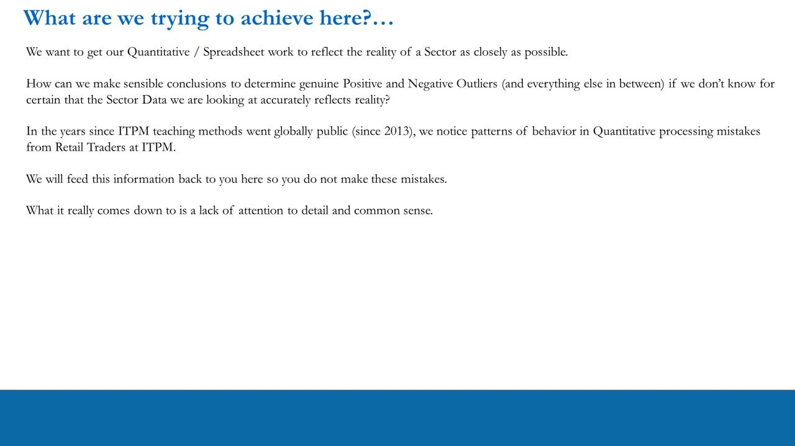
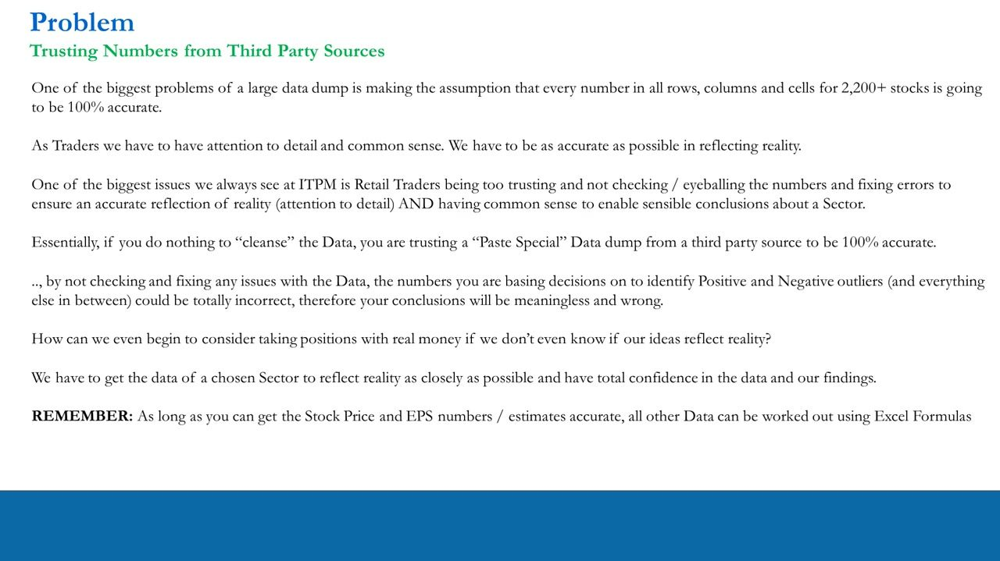
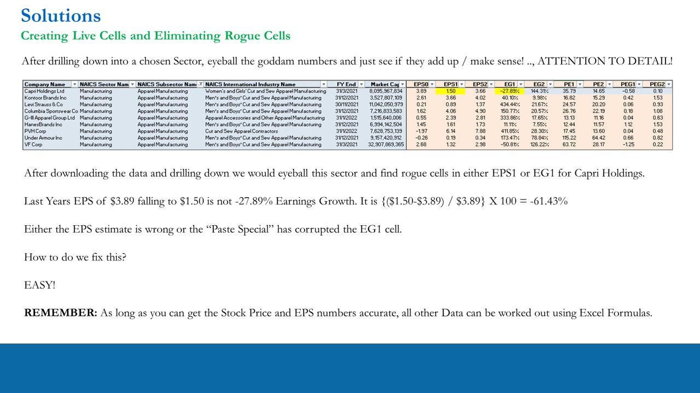
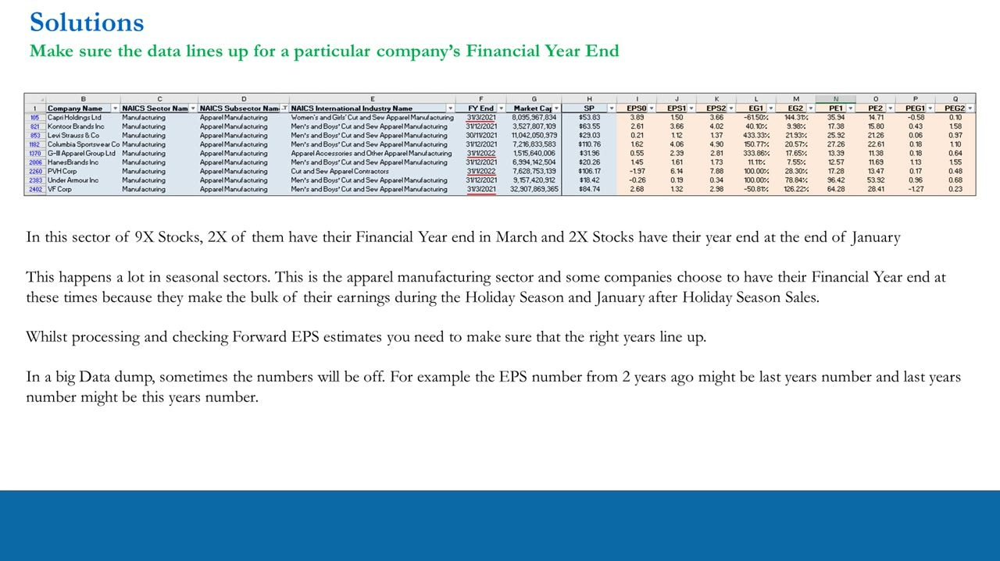
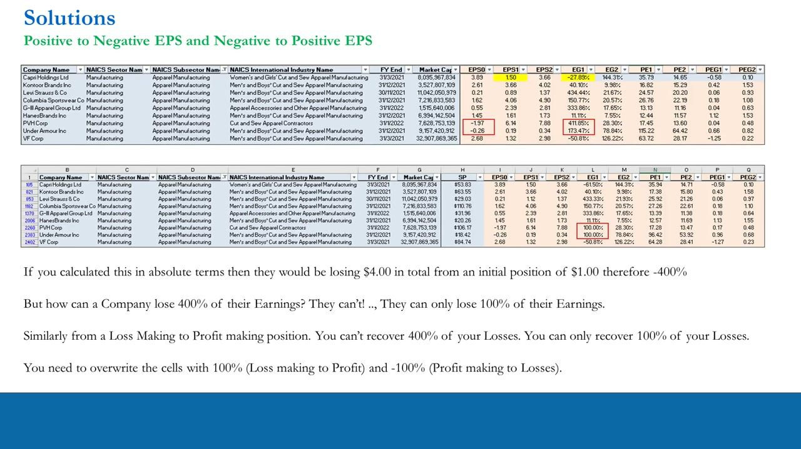
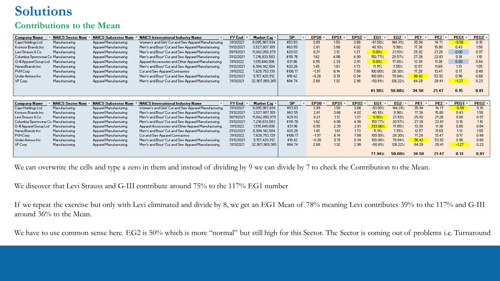
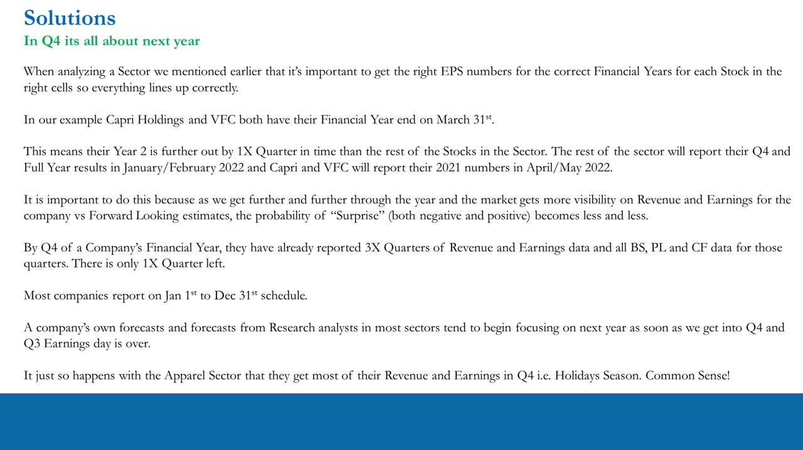
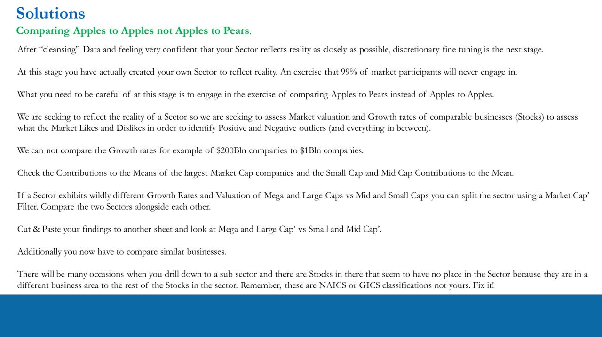

Trade Idea Generation – Quantitative Processing 7
Data-cleansing a downloaded stock screener so a sector's metrics reflect reality: make every cell LIVE (recompute EG/PE/PEG from Stock-Price + EPS), catch rogue cells (Capri's EG1 −27.89% → −61.50%), align financial-year ends across a seasonal sector, cap EPS sign-flips at ±100% (PVH/Under Armour 411.85%/173.47% → 100.00%), stress-test contributions to the mean (Levi + G-III skew EG1 117.43% → 41.38%), and compare apples-to-apples by market cap.
You cannot identify real outliers if the downloaded data doesn't reflect reality. Cleanse first: get Stock Price + EPS accurate and the Excel formulas re-derive the rest, then eyeball for rogue cells, align FY ends, cap sign-flips at ±100%, strip skew from the mean, and split by size before you compare.
The gist
- The whole point: get the spreadsheet to reflect the reality of a sector as closely as possible. A 'paste special' data dump of forward-looking numbers for ~2,200+ stocks (Zacks / NASDAQ, NAICS classification, updated monthly) is NOT guaranteed 100% accurate — if you cleanse nothing, your positive/negative-outlier conclusions could be totally wrong.
- THE GUIDING RULE: as long as you get the Stock Price and EPS numbers/estimates accurate, all other data (EG, PE, PEG) can be worked out with Excel formulas. So verify only SP + EPS from a free public source (e.g. Yahoo Finance) and make every cell LIVE, then AutoFill down. The standard 11 numbers: SP, Mkt Cap, EPS0, EPS1, EPS2, EG1, EG2, PE1, PE2, PEG1, PEG2 (0 = last year, 1 = current forward year, 2 = next year). MISTAKE to avoid: don't make all 2,200+ stocks live — drill down to one sector (<20 stocks) FIRST, then cleanse. Work smart, not hard.
- Eyeball for ROGUE cells: in Apparel Manufacturing, Capri Holdings (CPRI) EPS0 $3.89 'falling' to EPS1 $1.50 was shown as EG1 −27.89%. That can't be right — (1.50−3.89)/3.89 = −61.43%; the corrected LIVE cell reads −61.50%. The paste-special had corrupted the EG1 cell. Also align FINANCIAL-YEAR ends: in this 9-stock Apparel set, 2 end 31 March (Capri, VF Corp) and 2 end 31 January (G-III, PVH) — apparel firms earn the bulk in the Holiday Season and Jan after-Holiday sales; a dump can also drop last year's EPS into this year's cell, so check the years line up.
- CAP EPS sign-flips at ±100%: a company can only lose 100% of its earnings (not 400%) and only recover 100% of its losses. Loss→profit names PVH (EPS0 −1.97 → 6.14) and Under Armour (EPS0 −0.26 → 0.19) showed raw EG1 411.85% / 173.47% — manually overwritten to 100.00% each (+100% loss→profit, −100% profit→loss).
- CONTRIBUTIONS TO THE MEAN: the ÷9 sector EG1 mean is 117.43% — common sense says that's not a real apparel average. Zero Levi + G-III and divide by 7 → 41.38% (they contribute ~75%); zero only Levi and ÷8 → 77.94% (Levi ~39%, G-III ~36%). Their EG1s (Levi 433.33% off 21c→$1.12; G-III 333.86% off 55c→$2.39) are genuine small-base growth, NOT sign-flips. Anchor to a 40–50% EG rate; the sector is a turnaround.
- Compare APPLES-TO-APPLES by market cap: you cannot compare the growth/valuation of $200Bln companies to $1Bln companies. Split a distorted sector with a market-cap filter (VF Corp's $33Bln removes it, leaving Capri + Under Armour as candidates — still turnarounds) and fix NAICS/GICS mis-classifications. And by Q4 it's all about next year: as visibility rises the probability of surprise falls (3 quarters reported, 1 left), so forecasts shift to next year — reinforced by FY-end offsets (Capri/VFC end 31 March, so their Year 2 is a quarter further out).
The dashboard, and what we're trying to achieve
- The full metric dashboard. Forward-looking sector filters: Market Cap, % Earnings Growth (EG), % Revenue Growth (RG), P/E, PEG. Backwards-looking valuation: EV, EBIT & EBITDA, EV/EBIT, EV/EBITDA. Plus the backwards-looking statement metrics (P&L margins, Balance-Sheet ratios, P/L+BS combos, FCF Yield) and Qualitative KPIs.
- The aim of this lesson: get the quantitative / spreadsheet work to reflect the reality of a sector as closely as possible. You cannot make sensible conclusions about genuine positive and negative outliers (and everything in between) if you don't know the sector data actually reflects reality.
- Since ITPM went public (2013) the recurring retail mistakes in quantitative processing come down to one thing: a lack of attention to detail and common sense.
- Data sources may change over time — learn to Google for datasets yourself, don't rely on being told where everything is.
This is a practical clean-up lesson. Everything downstream (identifying outliers, sizing long/short ideas) is only as good as the cleansed data underneath it.

The problem — never trust a third-party data dump
- Downloading forward-looking data for ~2,200+ stocks (Zacks / NASDAQ.com) is a large-scale data dump. The labels differ from the PTM series — reorganise into the standard 11 numbers: SP, Mkt Cap, EPS0, EPS1, EPS2, EG1, EG2, PE1, PE2, PEG1, PEG2 (0 = last year, 1 = current forward year, 2 = next year).
- The biggest mistake is assuming every number in every row, column and cell for 2,200+ stocks is 100% accurate. If you do nothing to 'cleanse' the data, you are trusting a 'Paste Special' dump — the numbers you base outlier decisions on could be totally wrong, so your conclusions would be meaningless.
- How can we take positions with real money if we don't even know our ideas reflect reality? Get the data of a chosen sector to reflect reality as closely as possible and have total confidence in it.
- REMEMBER: as long as you can get the Stock Price and EPS numbers/estimates accurate, all other data can be worked out using Excel formulas.

Solution 1 — make cells LIVE, eliminate rogue cells
- After drilling into a chosen sector, eyeball the numbers and check they add up. Worked sector: Apparel Manufacturing, 9 stocks (Capri Holdings, Kontoor Brands, Levi Strauss, Columbia Sportswear, G-III, HanesBrands, PVH, Under Armour, VF Corp).
- The rogue cell: Capri Holdings (CPRI) — EPS0 $3.89 falling to EPS1 $1.50 is NOT −27.89% earnings growth. (1.50 − 3.89)/3.89 × 100 = −61.43%. Either the EPS estimate was wrong or the paste-special corrupted the EG1 cell.
- The fix: cross-check EPS + Stock Price from a free public source (Yahoo Finance showed CPRI at $53.83, current-year avg estimate 1.5, next-year 3.66 — so the EG cell was the corruption). Add the Stock Price and make all cells LIVE with formulas — e.g. EG1 =(J105−I105)/I105, PE1 =H105/J105, PEG2 =(O105/M105)/100. Corrected, CPRI EG1 reads −61.50%. Repeat for every stock, then AutoFill down.
- MISTAKE: do NOT make all 2,200+ stocks live and check them all. Only do this once you've drilled down to fewer than ~20 stocks (one sector). Work smart, not hard.
'Live' means the cell is a formula recomputed from Stock Price + EPS, not a static pasted number. Get SP and EPS right and the formulas re-derive EG/PE/PEG correctly.

Solution 2 — line up each company's Financial-Year end
- In this sector of 9 stocks, 2 have their financial year end in March (Capri 31/3/2021, VF Corp 31/3/2021) and 2 end at end-January (G-III 31/1/2022, PVH 31/1/2022); the rest end December/November.
- This happens a lot in seasonal sectors: apparel firms choose these year ends because they make the bulk of earnings in the Holiday Season and January after-Holiday sales.
- While processing forward EPS estimates, make sure the right years line up across all stocks. In a big data dump the numbers can be off — e.g. the EPS from two years ago ends up as last year's number, and last year's as this year's. Check the FY End column and fix it.
- If forward years aren't aligned you are comparing different points in each company's forecast cycle, and the EG/PE/PEG comparison across the sector becomes meaningless.

Solution 3 — cap EPS sign-flips at ±100%
- When EPS flips sign (profit→loss or loss→profit), the naive % growth formula explodes into nonsense, and an AutoFilled dump gets it wrong. Loss→profit names in this sector: PVH (EPS0 −1.97 → EPS1 6.14) and Under Armour (EPS0 −0.26 → EPS1 0.19).
- The raw dump showed EG1 = 411.85% (PVH) and 173.47% (Under Armour). In absolute terms, going from +$1.00 to −$4.00 is losing $4 from a $1 base = −400%. But a company can only lose 100% of its earnings — not 400%. Likewise you can only recover 100% of your losses.
- The fix: manually overwrite these cells — +100% for loss→profit and −100% for profit→loss. Both PVH and Under Armour EG1 become 100.00%.
- Distinct from a genuine huge growth off a small positive base (Levi 21c→$1.12, G-III 55c→$2.39) — those are NOT sign-flips; you don't cap them. Note: overwriting an EG cell with a typed number corrupts the PEG cell that referenced it, so re-enter those PEGs too.

Solution 4 — contributions to the mean (stress-test the average)
- Dividing by 9, the sector mean EG1 = 117.43% (EG2 50.60%, PE1 34.50, PE2 21.47, PEG1 0.14, PEG2 0.81). Common sense: is 117% a real average earnings-growth rate for apparel manufacturing? No — a few stocks are skewing it and flattering the sector.
- The stress-test: overwrite the suspect stocks' EG1 with zero and re-divide by the reduced count. Zero both Levi Strauss and G-III and divide by 7 → EG1 mean drops to 41.38% (so Levi + G-III together contribute ~75% of the 117%).
- Zero only Levi and divide by 8 → EG1 mean 77.94%. So Levi contributes ~39% to the 117% and G-III ~36%. Their EG1s are genuine small-base growth (Levi 433.33% off 21c→$1.12; G-III 333.86% off 55c→$2.39), not sign-flips.
- Why it matters: a flattered average can hide a genuine positive outlier and great long idea. With the skew stripped, anchor to a 40–50% EG rate. Kontoor (EG1 40% / EG2 11%) and HanesBrands (EG1 11% / EG2 7.5%) look normal; almost everything else is a turnaround — the sector is coming out of problems. With Year-1 unreliable, look to Year 2 for outlier clues (Capri EG2 144%, Under Armour EG2 79%, VFC EG2 126%).
'Contribution to the mean' = how much one stock is dragging the sector average. Zeroing it and re-averaging on the smaller count isolates its effect.

Q4 — visibility rises, surprise falls, it's all about next year
- As a company moves through its financial year the market gains visibility on revenue and earnings vs the forward estimates, so the probability of a surprise (up or down) becomes less and less.
- By Q4 a company has already reported 3 quarters of revenue/earnings (and all BS, P&L, CF data for them) with only 1 quarter left. Its own forecasts and sell-side analysts shift focus to next year as soon as Q4 begins and Q3 earnings day is over — so it's all about next year.
- This interacts with FY-end offsets: Capri and VFC end 31 March, so their Year 2 is one quarter further out than the December-ending peers — the rest report Q4/full-year in Jan/Feb 2022, Capri and VFC report their 2021 numbers in April/May 2022.
- Seasonality caveat: apparel gets most of its revenue and earnings in Q4 (Holiday Season). Always ask what sector this is, whether it's seasonal, each stock's financial year, and what time of year we're in right now.

Solution 5 — compare apples to apples, not apples to pears
- After cleansing, discretionary fine-tuning is the next stage — at this point you've built your own sector that reflects reality, an exercise 99% of market participants never engage in.
- You're assessing the market valuation and growth rates of comparable businesses to see what the market likes and dislikes. You cannot compare the growth rates of $200Bln companies to $1Bln companies — that's apples to pears.
- Check the contributions to the mean of the largest market-cap companies separately from the small- and mid-cap contributions. If a sector shows wildly different growth/valuation for mega & large caps vs mid & small caps, split it with a market-cap filter, cut & paste to another sheet, and compare the two halves side by side. In the worked run, VF Corp's $33Bln market cap removes it, leaving Capri and Under Armour (still turnarounds).
- Fix mis-classified stocks: drilling into a subsector you'll find names that have no place there because they're in a different business area. These are NAICS / GICS classifications, not yours — fix it, and compare only genuinely similar businesses.

Glossary
- Live cellA screener cell that is a formula recomputed from source (Stock Price + EPS) rather than a static pasted number. EG1 =(EPS1−EPS0)/EPS0, PE1 = SP/EPS1, PEG = PE/(EG×100). The guiding rule: get Stock Price and EPS accurate and the formulas re-derive EG/PE/PEG. Only do this once drilled down to <20 stocks — never for all 2,200+.
- Rogue cellA cell a 'paste special' data dump corrupted. Worked example: Capri Holdings (CPRI), EPS0 $3.89 → EPS1 $1.50 shown as EG1 −27.89% when it should be (1.50−3.89)/3.89 = −61.43%; the corrected live cell reads −61.50%. Caught by eyeballing the numbers and cross-checking SP + EPS on a free public source (Yahoo).
- Financial-Year-End alignmentMaking each company's forward EPS sit in the correct FY cell so the sector's FY1/FY2 columns are comparable. Seasonal sectors use different FY ends: in the 9-stock Apparel set, 2 end 31 March (Capri, VF Corp) and 2 end 31 January (G-III, PVH). A dump can also put last year's EPS in this year's cell — check the years line up.
- EPS sign-flip cap (±100%)When EPS flips profit↔loss the naive % growth explodes. A company can only lose 100% of its earnings and only recover 100% of its losses, so overwrite the EG cell with +100% (loss→profit) or −100% (profit→loss). Example: PVH (−1.97→6.14) and Under Armour (−0.26→0.19) raw EG1 411.85% / 173.47% → 100.00% each.
- Contributions to the meanHow much one stock skews a sector average. Apparel EG1 ÷9 = 117.43% is not a real average. Zero Levi + G-III and ÷7 → 41.38% (they contribute ~75%); zero only Levi and ÷8 → 77.94% (Levi ~39%, G-III ~36%). Their growth (Levi 433.33%, G-III 333.86%) is genuine small-base, not a sign-flip. Anchor to a 40–50% EG rate.
- Apples-to-apples by market capYou cannot compare the growth/valuation of $200Bln vs $1Bln companies. Split a distorted sector with a market-cap filter (mega/large vs mid/small), cut & paste to another sheet, and compare side by side. VF Corp's $33Bln removes it, leaving Capri + Under Armour. Also fix NAICS/GICS mis-classifications — those aren't your classifications, fix them.
- In Q4 it's all about next yearAs a company moves through its FY the market gains visibility, so the probability of a surprise falls. By Q4, 3 quarters are reported with 1 left, and forecasts shift to next year. FY-end offsets matter: Capri and VFC (31 March) have their Year 2 one quarter further out than December-ending peers.